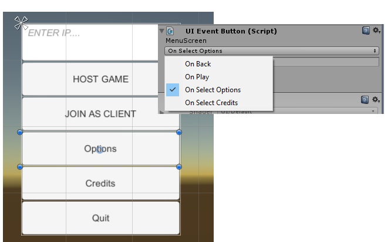

The Project
I initially wrote this plugin to easily manage the flow of UI screens for a game we were working on at university, but it in essence, it is just a generic node graph editor that can be used for all sorts of purposes. The basic idea is that the user can create nodes and on those nodes, the user can create any number of events that can be hooked up to other nodes.
Generation
When a graph is saved, the system creates a xml file to save the layout of the graph and a C# file that contains generated enums of node connections and some utility methods.
All the code shown below is generated.
public class UIFlowGraph : Singleton<UIFlowGraph>
{
public enum NodeId
{
DefaultNode,
MenuScreen,
GameHUD,
OptionsScreen,
CreditsScreen,
GameplayOptionsScreen,
GraphicsOptionsScreen,
AudioOptionsScreen
}
public enum DefaultNode_NodeEventId
{
OnBack = 0,
OnBegin = 1
}
public enum MenuScreen_NodeEventId
{
OnBack = 0,
OnPlay = 2,
OnSelectOptions = 3,
OnSelectCredits = 4
}
public enum GameHUD_NodeEventId
{
OnBack = 0
}
public enum OptionsScreen_NodeEventId
{
OnBack = 0,
OnSelectGameplay = 5,
OnSelectGraphics = 6,
OnSelectAudio = 7
}
public enum CreditsScreen_NodeEventId
{
OnBack = 0
}
public enum GameplayOptionsScreen_NodeEventId
{
OnBack = 0
}
public enum GraphicsOptionsScreen_NodeEventId
{
OnBack = 0
}
public enum AudioOptionsScreen_NodeEventId
{
OnBack = 0
}
public enum NodeEventId
{
OnBack = 0,
OnBegin = 1,
OnPlay = 2,
OnSelectOptions = 3,
OnSelectCredits = 4,
OnSelectGameplay = 5,
OnSelectGraphics = 6,
OnSelectAudio = 7
}
public event System.Action<NodeId> OnFired = delegate { };
public NodeId m_Current;
public Stack<NodeId> m_BackTrack = new Stack<NodeId>();
private void Awake()
{
DontDestroyOnLoad(gameObject);
}
private void PushPrevious(NodeId node)
{
m_BackTrack.Push(m_Current);
m_Current = node;
}
public void NextNode(NodeEventId ev)
{
switch(ev)
{
case NodeEventId.OnBegin:
PushPrevious(NodeId.MenuScreen);
OnFired(NodeId.MenuScreen);
break;
case NodeEventId.OnPlay:
PushPrevious(NodeId.GameHUD);
OnFired(NodeId.GameHUD);
break;
case NodeEventId.OnSelectOptions:
PushPrevious(NodeId.OptionsScreen);
OnFired(NodeId.OptionsScreen);
break;
case NodeEventId.OnSelectCredits:
PushPrevious(NodeId.CreditsScreen);
OnFired(NodeId.CreditsScreen);
break;
case NodeEventId.OnSelectGameplay:
PushPrevious(NodeId.GameplayOptionsScreen);
OnFired(NodeId.GameplayOptionsScreen);
break;
case NodeEventId.OnSelectGraphics:
PushPrevious(NodeId.GraphicsOptionsScreen);
OnFired(NodeId.GraphicsOptionsScreen);
break;
case NodeEventId.OnSelectAudio:
PushPrevious(NodeId.AudioOptionsScreen);
OnFired(NodeId.AudioOptionsScreen);
break;
}
}
public void PreviousNode()
{
if(m_BackTrack.Count > 0)
{
NodeId popped = m_BackTrack.Pop();
m_Current = popped;
OnFired(popped);
}
}
}
This singleton can easily be used to transition between states. The state machine will always begin on the turqouise “DefaultNode”, so only OnBegin is available to be fired initially.
UIFlowGraph.Instance.OnFired += OnNodeFired;
UIFlowGraph.Instance.NextNode(UIFlowGraph.NodeEventId.OnBegin);
Because I designed the system to be as generic as possible, it is not directly tied to UI. The user must determine what happens in the OnFired event handler as shown below.
private void OnNodeFired(UIFlowGraph.NodeId screenId)
{
UIScreen screen = m_Screens.Where(x => x.m_ScreenId == screenId).FirstOrDefault();
if (screen == null)
{
// Screen not found, popping it off the backtrack stack
if (UIFlowGraph.Instance.m_BackTrack.Count > 0)
{
UIFlowGraph.NodeId popped = UIFlowGraph.Instance.m_BackTrack.Pop();
UIFlowGraph.Instance.m_Current = popped;
}
return;
}
m_Screens.ForEach(x => x.gameObject.SetActive(false));
screen.gameObject.SetActive(true);
}
I created some handy utility components for firing events. The image below shows the UI Event Button which automatically detects what state (node) is currently active and shows the available outgoing connections that match that node. When the button is pressed, the selected event will be fired (in this case when clicking options, OnSelectOptions is fired and the options screen is enabled). Note how the component shows you what state is currently active (MenuScreen).
In my case, I used my node graph editor to manage the flow of my UI, but it can also be used for things like A.I. or other things that benefit from a state machine.